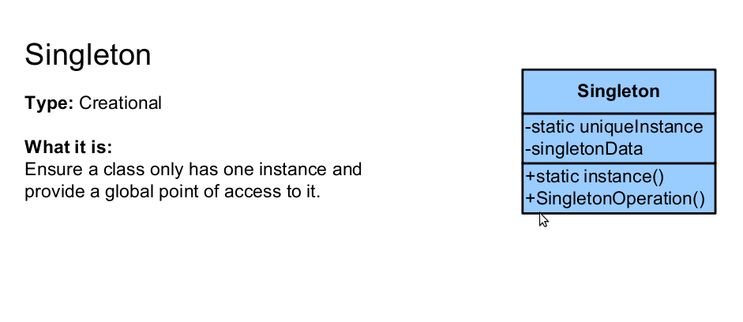
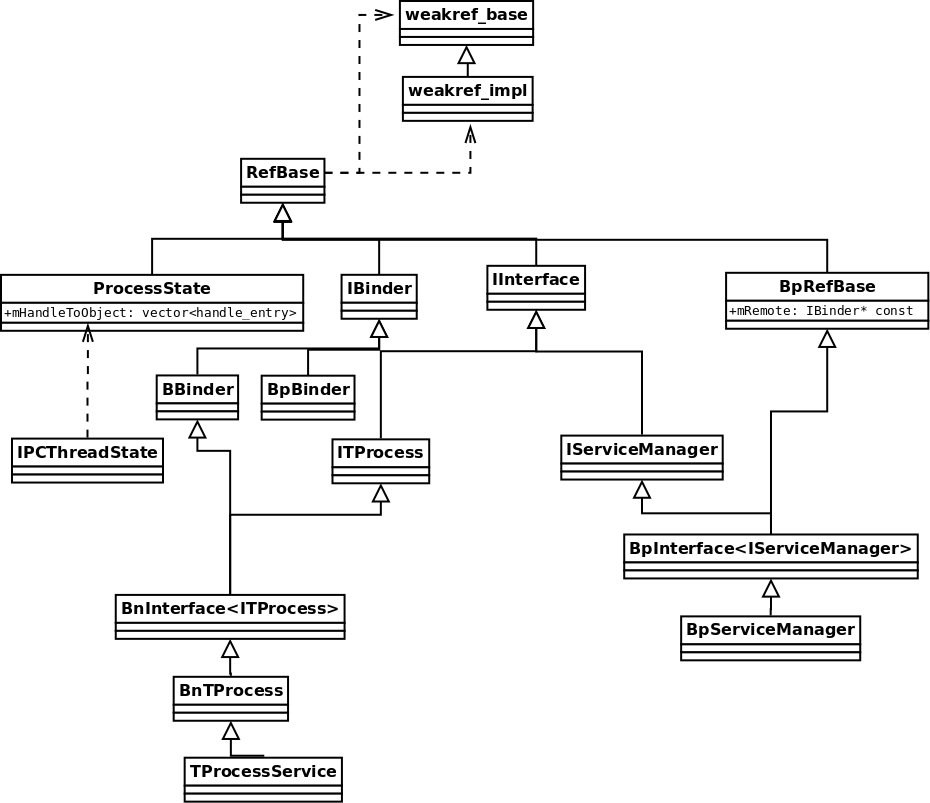
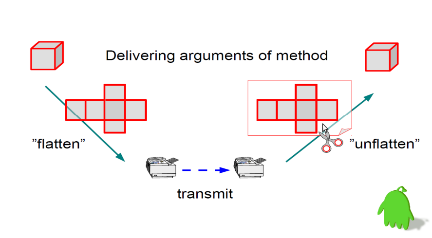

<!doctype html>
<html lang="en">
<head>
        <meta charset="utf-8">
        <!--<meta charset="gb2312">-->

		<title>Binder in Details I</title>

		<meta name="description" content="A framework for easily creating beautiful presentations using HTML">
		<meta name="author" content="Hakim El Hattab">

		<meta name="apple-mobile-web-app-capable" content="yes" />
		<meta name="apple-mobile-web-app-status-bar-style" content="black-translucent" />

		<meta name="viewport" content="width=device-width, initial-scale=1.0, maximum-scale=1.0, user-scalable=no">

		<link rel="stylesheet" href="reveal/css/reveal.min.css">
		<link rel="stylesheet" href="reveal/css/theme/default.css" id="theme">

		<!-- For syntax highlighting -->
		<link rel="stylesheet" href="reveal/lib/css/zenburn.css">

		<!-- If the query includes 'print-pdf', use the PDF print sheet -->
		<script>
			document.write( '<link rel="stylesheet" href="reveal/css/print/' + ( window.location.search.match( /print-pdf/gi ) ? 'pdf' : 'paper' ) + '.css" type="text/css" media="print">' );
		</script>

		<!--[if lt IE 9]>
		<script src="lib/js/html5shiv.js"></script>
		<![endif]-->
	</head>
    <body>
        <div class="reveal">
            <div class="slides">
                <section data-markdown data-separator="===" data-vertical='---'>
                    <script type="text/template">
                       ## Binder in Details part 2
                       ### Implements in CPP

                       lijin@routon
                       ===
                       ## 内容规划

                       * 指针管�
                       * ��1: CPP��
                       * ��2: 驱动(part3)
                       * ��3: Java��(part4)
                    </script>
                </section>
                <section data-markdown data-separator="===" data-vertical='---'>
                    <script type="text/template">
                    ## Pointers Management

                    Android为了方便内存的管�，定义了一套指针的管�方�，简化内存的管�，包括：

                    * RefBase
                    * sp<T>:Strong Pointer
                    * wp<T>:Weak Pointer
                    ---
                    ### Strong Pointer
                    </script>
                </section>
                <section data-markdown data-separator="===" data-vertical='---'>
                    <script type="text/template">
                        ## ��1:CPP库的��
                        ### 以TProcessService的��为主线
                        ---
                        ### TProcessService Main
                        <pre><code data-trim>
int main(int argc, char** argv)
{
    sp < ProcessState > proc(ProcessState::self());

    TProcessService::instantiate();

    ProcessState::self()->startThreadPool();

    IPCThreadState::self()->joinThreadPool();
    return 0;
}
                        </code></pre>
                        ---
                        ### Singleton
                        
                        ---
                        ### Singleton (cont.)
                        进程状�的�例
                        <pre><code data-trim>
sp < ProcessState > ProcessState::self()
{
    if (gProcess != NULL) return gProcess;
    
    AutoMutex _l(gProcessMutex);
    if (gProcess == NULL) gProcess = new ProcessState;
    return gProcess;
}
                        </code></pre>
                        ---
                        ### Singleton (cont.)
                        线程状�的�例
                        <pre><code data-trim>
IPCThreadState* IPCThreadState::self()
{
    if (gHaveTLS) {
restart:
        const pthread_key_t k = gTLS;
        IPCThreadState* st = (IPCThreadState*)pthread_getspecific(k);
        if (st) return st;
        return new IPCThreadState;
    }
    
    if (gShutdown) return NULL;
    
    pthread_mutex_lock(&gTLSMutex);
    if (!gHaveTLS) {
        if (pthread_key_create(&gTLS, threadDestructor) != 0) {
            pthread_mutex_unlock(&gTLSMutex);
            return NULL;
        }
        gHaveTLS = true;
    }
    pthread_mutex_unlock(&gTLSMutex);
    goto restart;
}
IPCThreadState::IPCThreadState()
    : mProcess(ProcessState::self()),
      mMyThreadId(androidGetTid()),
      mStrictModePolicy(0),
      mLastTransactionBinderFlags(0)
{
    pthread_setspecific(gTLS, this);
    clearCaller();
    mIn.setDataCapacity(256);
    mOut.setDataCapacity(256);
}
                        </code></pre>
                        ---
                        ### 注�下ProcessState的�造函数
                        <pre><code data-trim>
ProcessState::ProcessState()
    : mDriverFD(open_driver())
    , mVMStart(MAP_FAILED)
    , mManagesContexts(false)
    , mBinderContextCheckFunc(NULL)
    , mBinderContextUserData(NULL)
    , mThreadPoolStarted(false)
    , mThreadPoolSeq(1)
{
    if (mDriverFD >= 0) {
        // XXX Ideally, there should be a specific define for whether we
        // have mmap (or whether we could possibly have the kernel module
        // availabla).
#if !defined(HAVE_WIN32_IPC)
        // mmap the binder, providing a chunk of virtual address space to receive transactions.
        mVMStart = mmap(0, BINDER_VM_SIZE, PROT_READ, MAP_PRIVATE | MAP_NORESERVE, mDriverFD, 0);
        if (mVMStart == MAP_FAILED) {
            // *sigh*
            LOGE("Using /dev/binder failed: unable to mmap transaction memory.\n");
            close(mDriverFD);
            mDriverFD = -1;
        }
#else
        mDriverFD = -1;
#endif
    }

    LOG_ALWAYS_FATAL_IF(mDriverFD < 0, "Binder driver could not be opened.  Terminating.");
}
static int open_driver()
{
    int fd = open("/dev/binder", O_RDWR);
    if (fd >= 0) {
        fcntl(fd, F_SETFD, FD_CLOEXEC);
        int vers;
        status_t result = ioctl(fd, BINDER_VERSION, &vers);
        if (result == -1) {
            LOGE("Binder ioctl to obtain version failed: %s", strerror(errno));
            close(fd);
            fd = -1;
        }
        if (result != 0 || vers != BINDER_CURRENT_PROTOCOL_VERSION) {
            LOGE("Binder driver protocol does not match user space protocol!");
            close(fd);
            fd = -1;
        }
        size_t maxThreads = 15;
        result = ioctl(fd, BINDER_SET_MAX_THREADS, &maxThreads);
        if (result == -1) {
            LOGE("Binder ioctl to set max threads failed: %s", strerror(errno));
        }
    } else {
        LOGW("Opening '/dev/binder' failed: %s\n", strerror(errno));
    }
    return fd;
}
                        </code></pre>
                        ---
                        ProcessState的�造函数，完�了：

                        * 打开/dev/binder设备
                        * 对打开的fd调用mmap，通知底层分�内存

                        <b>注�：ProcessSate针对�个进程�有一个�例， 
                            所以一个进程�会打开一次设备</b>
                        ---
                        �下�我们调用了
                        <pre><code data-trim>
    TProcessService::instantiate();
    void TProcessService::instantiate()
    {
        defaultServiceManager()->addService(String16("tprocess"), new TProcessService());
    }
                        </code></pre>
                        ---
                        defaultServiceManager()
                        <pre><code data-trim>
sp < IServiceManager > defaultServiceManager()
{
    if (gDefaultServiceManager != NULL) return gDefaultServiceManager;
    {
        AutoMutex _l(gDefaultServiceManagerLock);
        if (gDefaultServiceManager == NULL) {
            gDefaultServiceManager = interface_cast < IServiceManager > (
                ProcessState::self()->getContextObject(NULL));
        }
    }
    return gDefaultServiceManager;
}
                        </code></pre>
                        * �下�考虑getContextObject()
                        ---
                        <pre><code data-trim>
                        getContextObject()
sp< IBinder > ProcessState::getContextObject(const sp< IBinder > & caller)
{
    return getStrongProxyForHandle(0);
}
sp < IBinder > ProcessState::getStrongProxyForHandle(int32_t handle)
{
    sp < IBinder > result;

    AutoMutex _l(mLock);

    handle_entry* e = lookupHandleLocked(handle);

    if (e != NULL) {
        // We need to create a new BpBinder if there isn't currently one, OR we
        // are unable to acquire a weak reference on this current one.  See comment
        // in getWeakProxyForHandle() for more info about this.
        IBinder* b = e->binder;
        if (b == NULL || !e->refs->attemptIncWeak(this)) {
            b = new BpBinder(handle); 
            e->binder = b;
            if (b) e->refs = b->getWeakRefs();
            result = b;
        } else {
            // This little bit of nastyness is to allow us to add a primary
            // reference to the remote proxy when this team doesn't have one
            // but another team is sending the handle to us.
            result.force_set(b);
            e->refs->decWeak(this);
        }
    }

    return result;
}
                        </code></pre>
                        ---
                        ### BpBinder vs BBinder
                        

                        * BpBinder : binder proxy,代表server端在client端存在，�供�server的通信�能
                        * BBinder : 用���server端的通信
                        ---
                        所以之�的代�
                        <pre><code data-trim>
            gDefaultServiceManager = interface_cast < IServiceManager >(
                ProcessState::self()->getContextObject(NULL));
                        </code></pre>
                        相当�
                        <pre><code data-trim>
            gDefaultServiceManager = interface_cast < IServiceManager >(
                        new BpBinder(0));
                        </code></pre>
                        ---
                        ### interface_cast
                        <pre><code data-trim>
template < typename INTERFACE >
inline sp < INTERFACE > interface_cast(const sp < IBinder > & obj)
{
    return INTERFACE::asInterface(obj);
}
                        </code></pre>
                        ---
                        ### 两个巨��的�
                        <pre><code data-trim>
#define DECLARE_META_INTERFACE(INTERFACE)
    static const android::String16 descriptor;
    static android::sp < I##INTERFACE > asInterface(
            const android::sp < android::IBinder > & obj);
    virtual const android::String16& getInterfaceDescriptor() const;
    I##INTERFACE();
    virtual ~I##INTERFACE();


#define IMPLEMENT_META_INTERFACE(INTERFACE, NAME)
    const android::String16 I##INTERFACE::descriptor(NAME);
    const android::String16&
            I##INTERFACE::getInterfaceDescriptor() const {
        return I##INTERFACE::descriptor;
    }
    android::sp < I##INTERFACE > I##INTERFACE::asInterface(
            const android::sp < android::IBinder > & obj)
    {
        android::sp < I##INTERFACE > intr;
        if (obj != NULL) {
            intr = static_cast < I##INTERFACE* >(
                obj->queryLocalInterface(
                        I##INTERFACE::descriptor).get());
            if (intr == NULL) {
                intr = new Bp##INTERFACE(obj);
            }
        }
        return intr;
    }
    I##INTERFACE::I##INTERFACE() { }
    I##INTERFACE::~I##INTERFACE() { }
                        </code></pre>
                        ---
                        ���绪

                        * 所谓的ContextObject就是ServiceManager的一个引用
                        * ITProcess,IServiceManager是业务逻辑��
                        * BpServiceManager负责��ServiceManager客户端的业务逻辑通信
                        * BnTProcess��TProcessService的�务端的业务逻辑通信
                        * TProcessService��真正的业务逻辑功能��
                        ---
                        �下�我们继续看看interface_cast里的new BpServiceManager
                        <pre><code data-trim>
    BpServiceManager(const sp < IBinder >& impl)
        : BpInterface < IServiceManager >(impl)
    {
    }

    virtual sp < IBinder > getService(const String16& name) const
    {
    }

    virtual sp < IBinder > checkService( const String16& name) const
    {
        Parcel data, reply;
        data.writeInterfaceToken(IServiceManager::getInterfaceDescriptor());
        data.writeString16(name);
        remote()->transact(CHECK_SERVICE_TRANSACTION, data, &reply);
        return reply.readStrongBinder();
    }

    virtual status_t addService(const String16& name, const sp < IBinder > & service)
    {
        Parcel data, reply;
        data.writeInterfaceToken(IServiceManager::getInterfaceDescriptor());
        data.writeString16(name);
        data.writeStrongBinder(service);
        status_t err = remote()->transact(ADD_SERVICE_TRANSACTION, data, &reply);
        return err == NO_ERROR ? reply.readExceptionCode() : err;
    }

    virtual Vector < String16 > listServices()
    {
        Vector < String16 > res;
        int n = 0;

        for (;;) {
            Parcel data, reply;
            data.writeInterfaceToken(IServiceManager::getInterfaceDescriptor());
            data.writeInt32(n++);
            status_t err = remote()->transact(LIST_SERVICES_TRANSACTION, data, &reply);
            if (err != NO_ERROR)
                break;
            res.add(reply.readString16());
        }
        return res;
    }
                        </code></pre>
                        ---
                        BpInterface < IServiceManager >
                        <pre><code data-trim>
template < typename INTERFACE >
inline BpInterface < INTERFACE >::BpInterface(const sp < IBinder > & remote)
    : BpRefBase(remote)
{
}
BpRefBase::BpRefBase(const sp < IBinder > & o)
    : mRemote(o.get()), mRefs(NULL), mState(0)
{
    extendObjectLifetime(OBJECT_LIFETIME_WEAK);

    if (mRemote) {
        mRemote->incStrong(this);           // Removed on first IncStrong().
        mRefs = mRemote->createWeak(this);  // Held for our entire lifetime.
    }
}
                        </code></pre>
                        ---
                        �次���绪

                        * 至此，我们知�了BpServiceManager里有一个mRemote���际上指�了一个BpBinder
                        * 这个BpBinder里��存了一个mHandle
                        ---
                        继续�到开始时的代�
                        <pre><code data-trim>
    void TProcessService::instantiate()
    {
        defaultServiceManager()->addService(String16("tprocess"), new TProcessService());
    }
                        </code></pre>

                        * �下�该走addService()，分�真正的IPC函数了
                        ---
                        ### addService
                        <pre><code data-trim>
    virtual status_t addService(const String16& name, const sp < IBinder > & service)
    {
        Parcel data, reply;
        data.writeInterfaceToken(IServiceManager::getInterfaceDescriptor());
        data.writeString16(name);
        data.writeStrongBinder(service);
        status_t err = remote()->transact(ADD_SERVICE_TRANSACTION, data, &reply);
        return err == NO_ERROR ? reply.readExceptionCode() : err;
    }
                        </code></pre>
                        ---
                        ### addService Cont.

                        Parcel

                        
                        ---
                        BpBinder::transact()
                        <pre><code data-trim>
status_t BpBinder::transact(
    uint32_t code, const Parcel& data, Parcel* reply, uint32_t flags)
{
    // Once a binder has died, it will never come back to life.
    if (mAlive) {
        status_t status = IPCThreadState::self()->transact(
            mHandle, code, data, reply, flags);
        if (status == DEAD_OBJECT) mAlive = 0;
        return status;
    }

    return DEAD_OBJECT;
}
                        </code></pre>
                        ---
                        ### addService Cont.
                        status_t IPCThreadState::transact()
                        <pre><code data-trim>
status_t IPCThreadState::transact(int32_t handle,
                                  uint32_t code, const Parcel& data,
                                  Parcel* reply, uint32_t flags)
{
    status_t err = data.errorCheck();
    ...
    err = writeTransactionData(BC_TRANSACTION, flags, handle, code, data, NULL);
    ...
    if ((flags & TF_ONE_WAY) == 0) {
        if (reply) {
            err = waitForResponse(reply);
        } else {
            Parcel fakeReply;
            err = waitForResponse(&fakeReply);
        }
    } else {
        err = waitForResponse(NULL, NULL);
    }
    return err;
}
                        </code></pre>

                        * 大概知�干什么的就好，细节��和驱动一起讲
                        ---
                        addService结��，TProcessService开始进入主循�
                        <pre><code data-trim>
    ProcessState::self()->startThreadPool();
    IPCThreadState::self()->joinThreadPool();
                        </code></pre>

                        最终都会走�
                        <pre><code data-trim>
        IPCThreadState::self()->joinThreadPool(mIsMain);
                        </code></pre>
                        ---
void IPCThreadState::joinThreadPool(bool isMain)
                        <pre><code data-trim>
void IPCThreadState::joinThreadPool(bool isMain)
{

    mOut.writeInt32(isMain ? BC_ENTER_LOOPER : BC_REGISTER_LOOPER);
    status_t result;
    do {
        int32_t cmd;
        ...
        // now get the next command to be processed, waiting if necessary
        result = talkWithDriver();
        if (result >= NO_ERROR) {
            size_t IN = mIn.dataAvail();
            if (IN < sizeof(int32_t)) continue;
            cmd = mIn.readInt32();
            ...
            result = executeCommand(cmd);
        }
        ...
    } while (result != -ECONNREFUSED && result != -EBADF);

    LOG_THREADPOOL("**** THREAD %p (PID %d) IS LEAVING THE THREAD POOL err=%p\n",
        (void*)pthread_self(), getpid(), (void*)result);
    mOut.writeInt32(BC_EXIT_LOOPER);
    talkWithDriver(false);
}
                        </code></pre>
                        ---
                        结�
                        * 有两个线程在等待�应�自客户端的消�，�够的�驱动还会指示新建
                        * ��数�终究会走�IPCThreadState::transact()
                        * �收数�终究会走�IPCThreadState::joinThreadPool()里的循�
                        ---
                        �下�就该分�binder�议以�驱动��了
                    </script>
                </section>
                <!--<section data-markdown data-separator="===" data-vertical='---'>-->
                <!--<script type="text/template">-->
                    <!--<pre><code data-trim>-->
                    <!--</code></pre>-->
                <!--</script>-->
            <!--</section>-->
            </div>
        </div>
        <script src="reveal/lib/js/head.min.js"></script>
        <script src="reveal/js/reveal.min.js"></script>
        <script>
            //???????Իõ?Ƭ????????
            Reveal.initialize({
                // ?Ƿ???ʾ???½ǵķ?????
                controls: true,
                // ?Ƿ???ʾҳ???ײ??Ľ?????
                progress: true,
                // ?Ƿ????????ݼ?
                keyboard: true,
                // ?Ƿ?֧?ָ???ģʽ
                overview: true,
                // ?Ç·??Ô¶?????
                center: true,
                // ?Ƿ?ѭ????ʾ?õ?Ƭ
                loop: false,
                // Change the presentation direction to be RTL
                rtl: false,
                // Number of milliseconds between automatically proceeding to the
                // next slide, disabled when set to 0, this value can be overwritten
                // by using a data-autoslide attribute on your slides
                autoSlide: 0,
                // ?Ç·?Ö§??????????
                mouseWheel: false,
                // ?Ç·?Ö§??Á´?Óµ?3D??ת
                rollingLinks: true,

                // ??ҳЧ??
                transition: 'default', // default/cube/page/concave/zoom/linear/fade/none
                // ??Ò³?Ù¶?
                transitionSpeed: 'default', // default/fast/slow
				dependencies: [
					{ src: 'reveal/lib/js/classList.js', condition: function() { return !document.body.classList; } },
					{ src: 'reveal/plugin/markdown/marked.js', condition: function() { return !!document.querySelector( '[data-markdown]' ); } },
					{ src: 'reveal/plugin/markdown/markdown.js', condition: function() { return !!document.querySelector( '[data-markdown]' ); } },
					{ src: 'reveal/plugin/highlight/highlight.js', async: true, callback: function() { hljs.initHighlightingOnLoad(); } },
					{ src: 'reveal/plugin/zoom-js/zoom.js', async: true, condition: function() { return !!document.body.classList; } },
					{ src: 'reveal/plugin/notes/notes.js', async: true, condition: function() { return !!document.body.classList; } }
				]
            });
        </script>
    </body>
</html>

